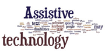
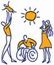

T
ransitions
4
Life
Home (h)
Home(h)
Technologies (a)
Technologies(a)
Self-Advocacy (s)
Advocacy(s)
Transition Guide (g)
Guide(g)
About Us (u)
About Us(u)
Contact Us (c)
Contact Us(c)
Home (h)
Technologies (a)
Self-Advocacy (s)
Transition Guide (g)
About Us (u)
Contact Us (c)
Assistive Technology
and
Advocacy Skills
for
Transition
from
HIGH SCHOOL
to
WORK
or
COLLEGE

Assistive Technology Examples
Self-Advocacy Techniques

Family Information Guide to
Assistive Technology and
Transition Planning